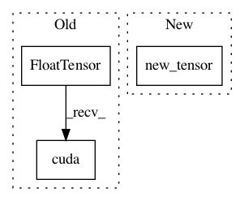

4cbe889c27f5a0c272c54b4e1065ef3525c2fc09,s2cnn/nn/soft/gpu/so3_fft.py,,_setup_wigner,#Any#Any#Any#Any#,183
Before Change
@lru_cache(maxsize=32)
def _setup_wigner(b, nl, weighted, device):
dss = __setup_wigner(b, nl, weighted)
dss = torch.FloatTensor(dss).cuda(device) // [beta, l * m * n]
return dss
@lru_cache(maxsize=None)
After Change
@lru_cache(maxsize=32)
def _setup_wigner(b, nl, weighted, like):
dss = __setup_wigner(b, nl, weighted)
dss = like.new_tensor(dss) // [beta, l * m * n]
return dss
@lru_cache(maxsize=None)
In pattern: SUPERPATTERN
Frequency: 3
Non-data size: 3
Instances
Project Name: jonas-koehler/s2cnn
Commit Name: 4cbe889c27f5a0c272c54b4e1065ef3525c2fc09
Time: 2018-05-02
Author: geiger.mario@gmail.com
File Name: s2cnn/nn/soft/gpu/so3_fft.py
Class Name:
Method Name: _setup_wigner
Project Name: jonas-koehler/s2cnn
Commit Name: 4cbe889c27f5a0c272c54b4e1065ef3525c2fc09
Time: 2018-05-02
Author: geiger.mario@gmail.com
File Name: s2cnn/nn/soft/so3_integrate.py
Class Name:
Method Name: setup_so3_integrate
Project Name: jonas-koehler/s2cnn
Commit Name: 4cbe889c27f5a0c272c54b4e1065ef3525c2fc09
Time: 2018-05-02
Author: geiger.mario@gmail.com
File Name: s2cnn/nn/soft/gpu/s2_fft.py
Class Name:
Method Name: _setup_wigner